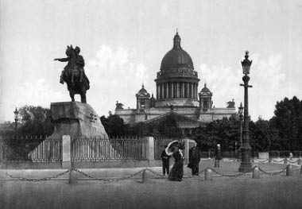

Rusya’da Büyük Petro hüküm sürerken, Türkiye eskisi gibi kuvvetli değildi. Kara Mustafa Paşa’nın Viyana’yı kuşatması, Türkiye için büyük bir felâket oldu. Harp tam on altı sene sürdü. Budin, şimdiki Budapeşte, Türklerin bir vilayet merkezi idi. Macaristan Türklerin bir vilayeti idi. Avusturyalılar Budin’i aldılar, Türkler:
“Aldı Nemse bizim nazlı Budin’i” diye yürekleri yanarak Budin’den ayrıldılar.
Türk Ordusu Zenta’da büyük bir felâkete uğradı. Tek başına Avusturyalılarla, Ruslarla, Lehlilerle, Venediklilerle çarpıştı. Nihayet düşmanlarla uzlaşmaya mecbur oldu. Drava suyu kenarında Karlofça kasabasında düşmanlarla sulh yapıldı. Macaristan elimizden çıktı. Yunanistan’da Mora Venediklilere bırakıldı. Azak Kalesi Büyük Petro’ya terk edildi. Batı Ukrayna Lehlilerin elinde kaldı. Türkler bu tarihten itibaren gerilemeye başladılar.
Karlofça Anlaşması’ndan sonra – III. Ahmet ve sadrazamları – Kavanoz, Enişte Hasan Paşa, Kalaylıkoz, Baltacı – Büyük Petro icraat ve ıslahatları Kuzey Harbi – Büyük Petro ve Demirbaş Şarl Çorlulu Ali Paşa’nın siyaseti XII Şarl’ın elçi istemesi Şarl’ın Yusuf Paşa ile diyalogu – Poltava – XII Şarl’ın Bender’e firarı Karlofça Anlaşması Osmanlı hâkimiyetine büyük bir darbe vurmuştu. Kalenberg, Salangamin ve Zenta mağlubiyetleri artık Osmanlıların harici kuvvetlerden de mahrum olduklarını gösteriyordu. Osmanlılar bu büyük mağlubiyetlere gelinceye kadar gerçekten dâhili birçok felaketlere yıkıntılara duçar olmuşlardı. Fakat o aşamada bu kadar ağır hezimetlere bu derece kanlı mağlubiyetlere giriftar oldukları görülmemişti. I. İbrahim kadınlar içinde sarayın süslü bahçelerinde zevk ve sefahatle hayatını sürdürür, I. Mustafa milletin hazinesini ihtilal şuuruna feda eder, IV Murat gaddarane bir şiddet ile saltanat sahifesini kan lekeleri içinde bırakır, bütün bu cinnetler ve cinayetler milleti kahır ve baskı altında üzer, fakat ordu hiç olmazsa haricen bir metanet gösterir, eski kuvvet ve heybetlerinden bir nebzesini olsun göstermeye gayret ederdi. Şimdi artık milletin yegâne varlık sermayesini teşkil eden askeri nüfuzda yok olmuş, haysiyetin görüntüsünden eser kalmamıştı. Ordu, Prens Ojen’in birbirini takip eden darbeleriyle Budapeşte’den tam bir mağlubiyetle çıkarılıyor, Erdel ile Macaristan ve Avusturya bırakılıyordu. Komaniçe ile Podolya ve Batı Ukrayna Polonya’ya terk edilmiş, Azak Kalesi Rusya’ya kalmak üzere ve Ruslarla da bir antlaşma imzalanmıştı. Daha doğrusu, Osmanlıların eski düşmanları arasına şimdi yeni bir imparatorluğun genç ve faal bir hükümdarı da dâhil olmuştu.
III. Ahmet kanlı bir ihtilal sonrası vatanın mukadderatını eline aldığı zaman harici vaziyet bu durumda idi. İçişleri, bir asırdan beri devam eden idari dalgalanmaların, rüşvet ve yiyiciliklerin kanlı ve feci sahnelerin, en zararlı tesirleri altında perişan olmuştu. III. Ahmet’in daha ilk günlerinden, bu idari dalgalanmanın bu yeni bir zekâ ile tamamen sona erdirilemeyeceği anlaşılmıştı. III. Ahmet tahta çıkışının ertesi günü camiye giderken vezirinin katlini isteyen asi ve şımarık askerlere onay verdiği zaman, zaaf ve teslimiyetini tam olarak ortaya koymuştu.[1]
Artık o tarihten itibaren uzun karışıklıkların devamlı rüşvetlerin alışıldığı şekilde devam edeceği hissedildi: III. Ahmet yapı itibariyle zayıf olduğu gibi safa ve istirahate yatkın idi. Hayatının hemen büyük bölümünü Karaağaç Köşkleri’nde gönül açan sayfiyelerde geçirir, lalelerle süslenmiş bahçelerde çırağlar tertip ettirirdi. Dâhili programlarının mühim bir bölümünü düğünler ve ziyafetlerle geçiren bu padişah üç senede “temiz soyuna yıldız gibi sekiz kız evladı ile acılı bahtlı sarayı çok süsleyen üç şehzadenin sahibi olmuştu.”
Çevresini oluşturan beceriksiz sadrazamlar ve ağalar içinde hayatını geçirmişti. III. Ahmet devrinin bu seçkin kişileri arasında en mühim simaları Kavanozlarla Kalaylıkozlar daha sonra da Baltacı Mehmet Paşalar teşkil ediyordu.
Kavanoz Ahmet Paşa yeniçeri isyanları esnasında ikbal mevkiine ulaşmış, yüksek sadrazamlık makamına yeniçerilerin tavsiyesiyle yükseltilmişti. Esasen, iktidarsız olan bu zat en çok cehalet ve rüşvetle şöhret bulmuştu. Ahmet Paşa rüşvet ve yiyiciliği son dereceye vardırmıştı. Rütbe ve kadroları parayla satar, kendisine kadrolara tayin talebiyle gelenlere açıktan açığa pazarlığa başlardı. Ahmet Paşa ötekinden berikinden para çekmeyi o derece mucidane bir sanat haline getirmiştir ki, kendisine avam arasında “Kavanoz” unvanı verilmişti. Ahmet Paşa bodur boyu, tıknaz vücudu, garip davranışları ve hareketleri ile tanınan tiplerden birini teşkil ediyordu. Onun bu ahlakını III. Ahmet de biliyordu. Hatta Kavanoz’u sadrazamlık makamından düşürmek için uygun bir zaman bekliyordu. III. Ahmet sadrazamlığı birkaç defa eniştesi Hasan Paşa’ya teklif etmiş, kabul etmediğini görünce üzülmüş, nihayet Kavanoz hakkındaki şikâyetlerin çoğalması üzerine sadrazamlık mührünü aldırmaya karar vermişti. Kavanoz, III. Ahmet’in mührü hümayunu istemek için gönderdiği Silahtarağa’dan bu felaket haberini duyar duymaz “büyük bir ıstırapla zaman ve zemin başına zindan olup mühr-i şerifi kaytan ile yakasına bağlı olmakla bu kadar zaman birçok problemi çözmüş ve meseleyi halletmişken(!) bu defa o kadarcık bir problemi çözemeyip” kaytanı ile beraber yakasından koparıp vermeğe mecbur olmuştu!
Yeni sadrazam Hasan Paşa idari işlere oldukça vakıf bir zattı. Fakat III. Ahmet’in çevresi daima yalan dolan dedikodu ile dolu olduğu için sadrazamlık makamı hiç kimsenin uhdesinde kalamıyor, vezirlerin seçiminde Kızlarağası’nın ve Valide Sultan’ın tesirleri gözüküyordu. Bu etkiler yine neticelerini vermiş, devlet işleri bu dönem dalgalı bir hale gelmişti. Bütün halk “Kalaylıkoz Ahmet Paşa sadarete geçse işler nasıl düzelir!” demeye başlamıştı. III. Ahmet kamuoyu tesirlerine kapılarak Kalaylıkoz’u seçmeğe mecbur olmuş, sadrazamlık mührünü Kalaylıkoz Ahmet Paşa’ya emanet etmişti.[2]
Ahmet Paşa, Baltacılıktan[3] yetişmiş, daha sonra Kandiye’ye vali tayin olunmuştu. Fakat bu yeni sadrazamın Hasan Paşa ile mukayese edilemeyeceğini insanları tanıyıp değerlendirmeğe vakıf olanlar tamamiyle teslim ve ifade ediyorlardı. Kalaylıkoz hemen hemen Kavanoz ölçüsünde aynı fikir terbiyesine sahip, aynı muhitin tesiri altında yetişmişti. Kendisinde vatan ve millete faydalı olmak, devlet içinde denge ve istikrarı tesis etmek, öteden beri nüfuzunu kaybetmiş olan sadrazamlık makamının eski büyüklük ve saygınlığını kazandırmak gücü yoktu. Kalaylıkoz, bütün bu düşünme gücünü sarf etmiş, sonunda yeni icraatlar adına yeni yeni konular icat etmeyi mühim bir başarı saymıştı. Kalaylıkoz’un beceriksizliği ileri görüşlü zatların gözünde öteden beri bilinip teslim ediliyordu. Hatta zamanın şairlerinden biri:
Nagehan bir gün Kalaylıkoz gelip oldu vezir
Her gören dedi: vezaret ırzını eğler şikest
Ben dedim: uslandı zira çark-ı te’dip eğleyub
Terbiye kılmak gerektir anı bunca sergüzeşt
Dedi bir danay-ı kar karargâh u sahip-i tecrübe
“Terbiyet naehilra çün kerd kanber kunbedest”
Tarzında Kalaylıkoz’un sadrazamlığını alkışlamıştı!
Kalaylıkoz esasen Kıbrıslı idi. Saraya evvela baltacılıkla girmiş, daha sonra IV. Murat’ın Kızlarağası Yusuf’un himayesini celbe muvaffak olarak sırasıyla yükselme basamaklarını kat etmişti. Kalaylıkoz, III. Ahmet devrinin garip ve gülünç simalarındandı. Yalancılık, öğünmek, kendini methetmek paşanın en birinci hasletlerindendi. Kalaylıkoz’un en samimi arkadaşı Kastamonulu Baltacı Mehmet Paşa idi. Baltacı Mehmet Paşa ile ilişkileri daha kapı yoldaşlık zamanından başlıyordu. İkisi de bir ocaktan yetişmişlerdi. İkisinde de yekdiğerini tamamlayan, yekdiğeri ile aynı derecede karakter nitelikleri vardı. Biri yalancı, kendini beğenmiş, öbürü hileci, tuzakçı idi. Fakat ikisinde de müşterek bir haslet vardı ki, o da para ve rüşvete karşı büyük bir gönül zaafı göstermeleriydi. Kalaylıkoz’la Baltacı bu kötü nitelikleri düzeltmeye imkân veren bir çevrede yaşamamışlardı. Yaşasalar da karakterlerini ıslah edecek kabiliyet göstermemişlerdi. Oturdukları yer, esasen çoğunluğu kendileri ile aynı yapıda, vazifeleri de fikirden, düşünceden çok kol kuvveti ile iş görmeğe müsait saray baltacıları ile doluydu. Bu ocak, Harem-i Hümayun’a bakmaması için saray kapısının solunda, gayet derin ve rutubetli bir yere inşa olunmuştu. Koğuşa kaba ve adi taş merdivenlerle inilir, loş ve sıkıcı, kalbe, kararma ve soğukluk hissi veren bir avluya ulaşılırdı. Avlunun ortası açık, solunda üzeri kısmen manasız fakat kıymetli çinilerle süslü, kısmen sade taşlar üzerine işlenmiş kitabelerle, çeşmeler, ahşap ve yüksek koğuşlar, sağda duvarlarına levhalar asılı ufak ve karanlık bir cami, daha sonra ağaların oturmasına tahsis edilmiş sıravari pikeler ve kahve ocakları gelirdi. İşte bu kitabelerden birinde bulunan manası tezatla dolu mısraında;
Cennetâsâ bu cay-ı bihemta
(Cennete benzeyen bu benzersiz yer.)
Kalaylıkozlarla Baltacı Mehmet Paşa’nın burası ilk devam ettikleri yer olmuştur.
Bu iki dostun Baltacılar Ocağında geçirdikleri hayat yalnız hizmeti yerine getirmeye münhasır kalmazdı. Sabahleyin Kubbealtı önündeki karanlık serviler güneşin ilk ışıkları ile yaldızlandığı zaman Baltacılar ocağının karanlık duvarları arasında, adi bir kapı tokmağının ahenksiz takırtıları bütün baltacıları uyandırır, o zaman Kalaylıkoz’la baltacı arkalarında haremi görmemek için uzun yakalı elbiseler, Darüssaade Ağalarının arasından geçerler, beri taraftan sarayın işlerini görmekle meşgul olurlar, diğer taraftan Kızlarağası’na çatmak, saray ileri gelenlerinin entrikalarına alet olmaktan boş kalmazlardı. Üst dereceleri kazanabilmek için bu fennin bilinmesi mutlaka lazımdı. Daha doğrusu yegâne ilim ve marifet bu gibi hile ve entrikalarda gösterilecek maharetten ibaretti. III. Ahmet’in bu gibi hilelere oyuncak olduğu birçok defalar gözüküyor, hatta bundan muvaffakiyet kazanılmış oluyordu.
Kalaylıkoz’un sadrazamlığı belli başlı hiçbir vaka ile sivrilmemişti. Yalnız daha önce sadrazam olan Enişte Hasan Paşa’nın kethüdasından birkaç yüz kese akçe sızdırılmış, III. Ahmet’in nedimelerinden bir iki kişi lüzumsuz, layık olmayan sözler sarf ettikleri için kafaları kesilmiş, ahalinin sırmalı elbise giymeleri yasaklanarak bu şeref yalnız devlet büyüklerine mahsus kılınmış, bir de Azak Denizi’ndeki Yenikale’nin inşasını, Ruslara karşı himaye edebilmek için yeteri kadar donanma ve asker gönderilmiş idi.[4] Asıl mühim hadise, tam Kalaylıkoz’un İstanbul’a geldiği gün Payitaht sularında 1600 okka ağırlığında iri bir morina balığının ortaya çıkması idi. Kalaylıkoz böyle harikulade şeylerden pek hazzederdi. O gün Sadrazamlık makamını elde edip de padişahın huzurundan çıktığı sırada yalı köşkünde misafir odasına gelmiş, etrafına toplanan saray ileri gelenlerine padişah ile vuku bulan mülakatını anlatıyordu. Ahmet Paşa öteden beriden olanı bahsettikten sonra sözü balık meselesine intikal ettirerek
— Canım şurada bir büyük balık çıkmış. Cüssesi padişahımızı hayrete düşürmüş, ben kaptan iken Akdeniz’de bir balık çıkmıştı ki, boyu Sarayburnu’ndan Eyüp’e kadar varıyordu, demişti.
Sadrazam Paşa Hazretlerinin bu derin bilgisine karşı hiçbir kimse ufak bir şüphe alameti ortaya koyamamıştı. Artık balık meselesi Kalaylıkoz için mühim bir fırsattı. Paşa huzurda konuşulan sözleri nakletmeye devam ediyor, orada bulunanların kendisini büyük bir saygıyla dinlemesinden büsbütün cesarete geliyor.
— Ne dersiniz çektiri[5] ile getirdiğim huddamında[6] şevketli efendimizin de görmesine imkân olmuş, bana “Senin ne kadar çok huddamın var” buyurdular. Ben de cevap olarak “Bu ne olsa gerek, bir zaman âlem benim huddamım idi” dedim, şeklinde ahmaklık ortaya koyuyordu!
Kalaylıkoz’un böyle kaş yapayım derken göz çıkardığı çoklukla vaki olurdu. Hatta bir gün bazı ileri gelen idari erkân ile görüşürken güya padişahı kendisine minnettar etmek zannına kapılmış,
— Padişahın tahta çıkmasına sebep olan Edirne Vakası hep benim tedbirimle olmuştur, tarzında sözler sarf etmişti.
Kalaylıkoz’un sadrazam oluşu etrafa yayılır yayılmaz, vaktiyle Kalaylıkoz’un sohbetinde bulunan birçok cühela akın akın İstanbul’a gelmeğe başlamışlar, hepsi de Sadrazam Paşa’dan memuriyet almak arzusuna kapılmışlardı.
Kalaylıkoz’un gariplikleri birbirini takip ederdi. Kâh divan-ı hümayuna geldiği zaman giydiği kallaviyeye[7] adet olandan çok teller takar, kâh başka başka kıyafetler icat ederek kendisini bin türlü şekle sokardı. III. Ahmet bu bol heveshane gösterilerinden vazgeçmesini kendisine hatırlattığı zaman “Vezir-i azam olanların haşmet ve kıyafette diğer vezirlere benzemeleri reva olmayıp itibarda[8] baş durumda oldukları gibi süslenme malzemelerinde ve haşmette de onlardan saygın olmaları icap edeceğini söylerdi.
Kalaylıkoz bir gün verdiği emri ertesi gün feshederdi. Hükümet namına yerine getirdiği yegâne icraat on iki fırından başka hiç bir fırına has ekmek pişirtmemek, terlikçilerin, sarıkçıların mallarına ve bir de kayıkçılara mahsus bir fiyat tarifesi ortaya koymaktan ibaret olmuştu.
Fakat Prut’un müstakbel komutanı Kalaylıkoz’dan da baskındı. Baltacı Mehmet Paşa Kalaylıkoz’un kalın kafalılığını ve bönlüğünü bilir, hilekârane fikirleri ile kapı yoldaşını istediği gibi idareye muvaffak olurdu. Hatta Mehmet Paşa Kalaylıkoz’a suret-i haktan görünerek yaklaşmış, Enişte Hasan Paşa’nın sadrazamlığında saraydan uzaklaştırılmış iken kapı yoldaşı Kalaylıkoz’un yardımıyla kaptan paşalığa ulaşmıştı.
Artık Baltacı’nın yegâne düşüncesi Kalaylıkoz’u bir münasebetle bulunduğu mevkiden düşürmek, yerine sadrazamlık makamına geçmekti. Mehmet Paşa buna muvaffak olmak için Kalaylıkoz’un kethüdalığından kovulan Osman Paşa ile ittifak etmiş, planları başarı ile neticelendiği takdirde kendisine Dâhiliye Nezareti’ni vaat etmişti. Sonra Kızlarağası ile Kalaylıkoz’un arasının açık olduğunu haber alır almaz Kalaylıkoz’u müftüye musallat ederek, müftünün karışıklık çıkarmak teşebbüsünde bulunduğunu Kalaylıkoz vasıtası ile III. Ahmet’e ihbar etmişti. Fakat Kalaylıkoz bu meseleyi ispat edemeyince III. Ahmet Kızlarağası’ndan tahkikat rica etmiş, Kızlarağası da Baltacı’nın teşviki ile Kalaylıkoz’un aleyhinde bulunmuştu. Baltacı Kalaylıkoz’u kati bir surette sadrazamlıktan düşürmek için derhal Kalaylıkoz’a koşmuş, III. Ahmet şayet müftü hakkında tekrar bir şey soracak olursa bu havadisi ocak personelinden duyduğunu söylemesini Kalaylıkoz’a tavsiye etmiş, o da bu hileli tavsiyeyi harfi harfine yerine getirmişti. III. Ahmet Baltacı’nın ocak ağalarıyla münasebetini bildiği için artık o andan itibaren Baltacı’dan malumat almaya karar vermişti. Baltacı Mehmet Paşa III. Ahmet’le münasebetini temin ettikten sonra maksadına pek kolay nail olmuştu. Hatta III. Ahmet kendisine bu meseleden bahsettiği zaman bir gün kadar mühlet istemiş, derhal Yeniçeri Ocağına gelerek Zağarcıbaşı Tortumlu İbrahim Ağa’yı bir köşeye çekmiş, kendisinin Padişah tarafından sadrazamlığa nail olduğunu, sadrazamın yeniçeriler aleyhinde iftirada bulunduğu için azil olduğunu, bundan dolayı padişah tarafından kendisine bir sual vaki olduğu zaman sadrazamın gerçekten yeniçerileri teşvik ettiğini söylerse kendisini yeniçeri ağası tayin edeceğini söylemiş, İbrahim Ağa da buna razı olmuştur. Baltacı bu tertibatı tamamladıktan sonra sadrazamın hakikaten ocaklıyı isyana teşvik etmiş olduğunu III. Ahmet’e söylemiş, mesele İbrahim Ağa’dan tahkik edilmiş, Baltacı’nın bu hileli planları istenilen sonucu vermişti.
Baltacı, Kalaylıkoz’un yerine sadrazamlık makamına geçer geçmez kime memuriyet vaat etmiş ise bu vaatlerini birer birer yerine getiriyordu. İbrahim Ağa’ya Yeniçeri Ağalığı, Osman Ağa’ya Dâhiliye Nazırlığı veriliyor, azil ve tayinler birbirini takip ediyordu. Baltacı Mehmet Paşa idari işlerde hiçbir maharete sahip değildi.[9]
Fakat hilekârlıkta, rüşvet almakta son derece maharetli idi. Önemli işleri idare etmeye yeteneği olmadığı için en mühim işleri ihmal ettiği gibi günlük yürütülmesi lazım gelen işleri de kasten ihmal eder, bütün sorumluluğu III. Ahmet’in nedimlerine bırakırdı. III. Ahmet bunların hepsini bilirdi. Hatta bazen Baltacı’yı huzuruna çağırır, oradaki karışıklığın sebeplerini sorardı. O zaman Baltacı aczini, işi başarmak için gerekli vasıtaların olmadığı bahanesiyle örtbas etmek ister, kendisinin bağımsız olmadığını ima etmek için,
— Ben bu hizmetin adamı değilim, iki öküzle çiftçi olmam gerektir, derdi.
Baltacı’nın ehliyetsizliği tamamen anlaşılmış başa ve işe, fesat ve hile ile geçen Mehmet Paşa yine aynı vesaitle azil edilerek Sakız Adası’na sürülmüştür. (Muharrem 1118 H. - 1702 M. )
Baltacı’dan sonra sadaret makamına Çorlulu Ali Paşa geçmişti. Fakat sadrazamlık makamına ehliyetten daha çok hilekârlık ve menfaat tesiriyle yönlendirildiği için hiç kimsenin uhdesinde devamlı olamıyor, hükümet işleri adına hiç icraat yapılamıyordu. Devletin siyasi işlerini idare edenler baltacılıktan yetişme, bu işleri yürütmekten habersiz, rüşvet ve adam kayırma ile makam kazanmış zatlardan ibaret idi. Avrupa’nın en büyük devletlerini irfanıyla, siyasetiyle idare edip karşısında durmaya mecbur eden Osmanlı siyasetinin harika bir zekâ sergileyerek çekip çeviren Köprülülerin makamını şimdi her türlü vasıf ve meziyetten mahrum, gözleri menfaat hırsıyla perdelenmiş baltacılar ve saray hademeleri işgal ediyordu. Osmanlı Devletinin idaresi bu cahil ellerde[10] günden güne gerilemeye, zaman zaman yıkılmaya yaklaştığı zaman da hem civar hükümetlerde koca bir milletin ihyasını temin edecek, kavimlerin sosyal hayatında inkılâplar husule getirecek siyasiler yetişiyordu.
Osmanlı siyaseti acınacak bir halde idi. Kara Mustafa Paşa ordunun vakar ve görünen haysiyetini Viyana hendeklerine defnettiği zaman siyasi nüfuzumuzda onunla birlikte sönüp gitmişti.
Bu büyük devletin işleri bir karışıklık içinde yürüyor, bu hale vatanımızda oturan ecnebiler bile hayret ediyordu. Hatta on dört sene sonra, Macar Raçoçi’nin Tekirdağ’da mabeyincisi Mikeş, dostlarından birine yazdığı mektupta Osmanlı Hükümetini idare eden kişilerden bahsettiği sırada “Bu gün Sadrazam Mehmet Paşa seferden döndü. Şehre pek parlak bir merasimle girdi. Kendisini pek uzaktan görebildim. Yakışıklı, güçlü ve kuvvetli bir zat. Bununla birlikte bu, hayret edilecek bir şey değildir. Çünkü Mehmet Paşa babasının evinde hep davarlar ve öküzlerle idman yapmıştır. Şimdi de sadrazamlık makamını işgal ediyor. Fakat düşünüyorum da, bu imparatorluğun idaresi böyle kasapların, baltacıların elinde bulunursa nasıl iyi gider? Diyorum.” tarzında tasvir ediyordu.[11] Memlekette vatanseverler ve zekâ sahipleri yok değildi. Fakat bunlar hile ve desiselere ve yolsuzluklarına tenezzül etmedikleri için hep kale komutanlıklarına, hudut boylarına gönderilmişlerdi. İşbaşında bulunanlar ise kendi menfaatlerinden başka bir şey düşünmüyorlar, yanı başlarında bulunan hükümetlerin hallerini, ilerlemelerini, siyasi durumlarını dikkati nazara alacak yetenek ve güce sahip bulunmuyorlardı. Onların fikrince bütün kuvvet, kudret, ihtişam hep kılıca, topa, kan dökmeye, kale zapt etmeye dayanıyordu. Güya Fatihlerin, Selimlerin üstünlük devri bunlar için bitmeyen bir sermaye idi.
Avrupa baştanbaşa siyasi ve sosyal inkılâplarla çalkalanıyordu. Her millet kendi sosyal hayatını ıslaha çalışıyor, beşeriyeti tutuculuk ve baskı altında yaşatan kilise baskılarına kesin darbeler indiriyor, insanlığı zulüm ve sapıklıktan kurtarmak için fikirleri aydınlatacak ilmi ve ahlaki prensipler ortaya koyuyordu. Osmanlı sosyal hayatında ise bunun hiçbir aksi tesiri görülmüyordu. Maziye kanaatle geleceğin parlak emellerine insanlığın fikri yükselmesine karşı gösterilen bu kayıtsızlık devletin zaafını bir kat daha artırıyordu. Şimdi buna dışarıdan gelen tecavüzlerin asırlardan beri biriken düşmanlıkları, intikam alma arzularının daha etkili ve daha katı bir surette göstermesi de ekleniyordu. Artık Osmanlı İmparatorluğu’nun en zayıf noktaları, Osmanlı içişleri idaresinin perişan halleri tamamiyle anlaşılmıştı. Ordularımızın mağlubiyeti birbirini takip ediyordu. Elimizde bulunan yerler tamamen geriye alınmış, her tarafta milliyet ve medeniyet fikirleri uyanmış, vatanımıza karşı dini ve siyasi düşmanlıklar hâsıl olmuştu. Osmanlılar bu düşmanlığı halen kılıçla önlemenin mümkün olduğuna inanıyorlar, Avrupalıların reformlarına karşı ıslahatlar yapmayı akıllarından bile geçirmiyorlardı. Osmanlı idaresi baltacıların çirkin hırslarına feda olduğu sırada Avusturya’da Prens Ojen, Rusya’da Büyük Petro zuhur etmişti.[12]
Prens Ojen, Kanuni Sultan Süleyman’ın politikasını bırakarak gulam-ı hoş endam (hoş endamlı delikanlı) ve enva-ı sim u zer (altın ve gümüş çeşitleri) cazibesiyle Viyanalara kadar uzanan vahim siyasetinin cezasını torunlarına kanlı hezimetler şeklinde çektirmiş, Büyük Petro da bu hezimetlere düşerek zayıflayan Osmanlı Devletinin zararına büyük ve medeni bir imparatorluk kurmaya kalkışmıştı.
Petro’nun Avrupa tezgâhlarında işçilikle, gemicilikle geçirdiği hayat tarzı ve mesaisi ile III. Ahmet’in Bağdat Köşkü önünde denizin mavi sularına karşı renklenen lalelerin gönül okşayan renklerini seyretmesi arasında pek büyük fark vardı. III. Ahmet, tacını tahtını korumak için kızlarağası’nın veya Valide Sultan’ın yalan dolanlarına önem vererek ayda bir Sadrazam değiştirmekle meşgul olduğu sırada Büyük Petro Rusların vahşet ve cehalete dayanan hayat tarzını idari organizasyonunu sosyal hayatını değiştirmek, Rus milletine medeniyet fikirlerine kurulu bir kuvvet bahşetmek ve sonra bu kuvvete dayanarak civarındaki zayıf ve mülki idareden mahrum devletleri ezmek için hazırlanıyordu.
Petro pek genç yaşta çar ilan edilmiş, kız kardeşi Sofi, Petro’yu bir sayfiyeye kapatarak, idari işleri kendi yürütmeye başlamıştı. Petro okuma ve yazma öğrenmemişti. Fakat Avrupalılarla düşüp kalkması, Avrupa’nın ilerlemesine dair onlardan bilgiler alması his ve fikirlerini açmış, onda bu ilerlemeleri vatanında tatbik etmek arzusunu uyandırmıştı. Petro Avrupa’nın ilerleyip gelişmesini bizzat görmek, gerekli araştırmaları yapmak için Avrupa’ya gitmiş, kendisi ile beraber iki yüzü aşkın Rus gencini de götürmüştü. Sonra Avrupa’nın bütün gelişmelerini tam bir dikkatle incelemiş, Rusya’ya dönüşünde bunları birer birer tatbike başlamıştı.
Petro, Rusların çarlarına son derece itaat ettiklerini bildiği için bütün emirlerinin yerine getirileceğine inanıyordu. Petro, Rusların boş itikatlarından, cehaletinden, adetlerinden ve dinlerine bağlılıklarından nefret ederdi. Bu sebepten Rusları vahşet içinde yaşatan bu etkileri ortadan kaldırmak istemiş, buna muvaffak olmak için de her türlü zora başvurmuştu. Petro’nun maksadı Rusya’da öncelikle sosyal reformlar yapmaktı. Rusların eski, kaba, din taassuplarına dayanan cahilce gelenek ve düzenlerini ortadan kaldırmak, Avrupa’nın fikri hürriyetini, insanların refahını, sanat zevki üzerine kurulu makul ve esaslı prensiplerini ortaya koymak en birinci emeliydi. Bütün Avrupa’yı zulüm ve hakaret, esaret baskısı altında yaşatmış olan taassup Rusya’yı da vahşet halinde tutuyordu. O sırada Avrupalılar ancak dini ıslahat sayesinde bir refah ve sükûn devresine girmişlerdi. Ruhbanın menfaat elde etmek, baskı ve zorbalık için bütün adetlere soktukları din bağlarını tamamen kırmışlar, dini saflık ve yüksek temizliğini insanlığı refaha sevk eden, mutluluğa ulaştıran prensipleri ile tatbik etmeye başlamışlar, dinin yaşayan bir ahlaki prensip olduğunu göz önüne alarak, adetlerini ve ilerlemelerini milletlerinin tabiatlarına ve milli, ihtiyaçlarının derecesine göre tayin etmişler, bu sayede karanlıktan aydınlığa geçiş yapmışlardı. Petro bunlara tamamen vakıf olduğu için bütün ahaliye hitaben bir emirname yayınlıyor, bu emirnamede bütün memurların aynı şekilde bir kıyafeti giymelerini, kadınların daima meclislerde bulunmalarını, o zamana kadar kapalı gezen kadınların Avrupa kıyafetiyle yüzleri açık olarak toplantılara gelmelerini, Petersburg’da bir salon hayatı kurulmasını; dans, müzik, edebiyat gibi bir milletin sanat ruhunu gösteren güzel sanatların gelişmesine çalışılmasını, ahalinin uzun sakal bırakmamasını emir ediyordu. Petro’nun bu emri bütün Rus halkını yaralamıştı. Bunlar insanların her çevreye yavaş yavaş bir şekilde alışacaklarını, refahlarını temin eden her değişikliğin kendilerinde daha sonra alışkanlık yerine geçeceğini bilmedikleri için bundan pek üzülüyorlardı. Birçokları, Petro’nun, Avrupa’da öldüğünü ve yerine yabancı bir çar gelerek kendilerine bu zulmü yaptığını söylüyorlar, özellikle rahipler sakalsız bir adamın Hazreti Yesu’a (İsa’ya) benzemek şerefinden mahrum kalarak ruhen azap çekeceklerine inanıyorlardı. Bütün bu icraat Petro aleyhinde bir âlem hâsıl ediyor, Çarın emir komutayı ecnebi subaylara bırakmasından dolayı üzülen istereliçler Petro’yu öldürmek için anlaşmalar yapıyorlardı!
Petro bu isyan belirtilerini bastırmak için Rusları gunud darbeleri altında eziyordu. İstereliçlerin kafalarını kendi eliyle kesiyor, ruhban sınıfının baskısından kurtulmak için patrikliği lağvediyordu. Diğer taraftan da halkın fikirlerinin aydınlanmasına hizmet getiren âlimlerin, sanatkârların faaliyetlerinden istifade ediyor, Avrupa’da basılan eserleri Rusçaya tercüme ettiriyordu. İşte bütün bu ıslahat Rusların hayat tarzını değiştirmiş, onlara medeni ve esaslı bir kuvvet bahşetmişti.[13]

St. Petersburg I. Petro Anıtı - 1890